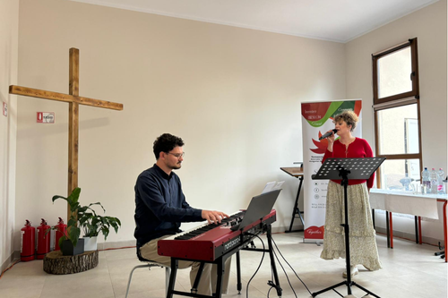
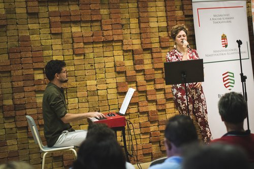

Our concerts types
We are actively performing and making music and we accept every invitation we can. Essentially, we offer three types of concerts:
Each concert consists of minimum 30 minutes, however we are also open to special requests. We warmly welcome every invitation and strive to accept each request. Those who have already heard us and felt their hearts beat along with us are encouraged to share their experiences- and for those who have not yet met us, we eagerly await the opportunity to connect.
From previous concerts
1 / 4

Újmosnica, Bánsági Hungarian Days
2 / 4

Berekfürdő, Slovakian Reformed Church
3 / 4

IKE Válts Irányt festival
4 / 4

IKE Válts Irányt festival